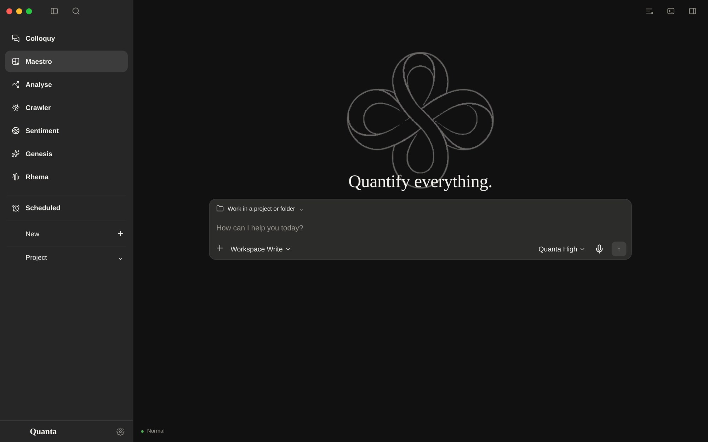

01Quanta Nova
Maestro
The default page, and the one that does the actual work: a full-width assistant that reads and writes files, runs shell commands and writes code — with every move shown in the turn.
- Files, shells, codeReads the working folder, runs a real shell, edits code. The turn records what it read, ran and changed, down to +N −M.
- Projects that rememberEvery project owns its sessions, materials and context, and names itself after the first exchange.
- Notifications that say somethingThe title is the session, the body is the reply. Click it and the window returns to that conversation.